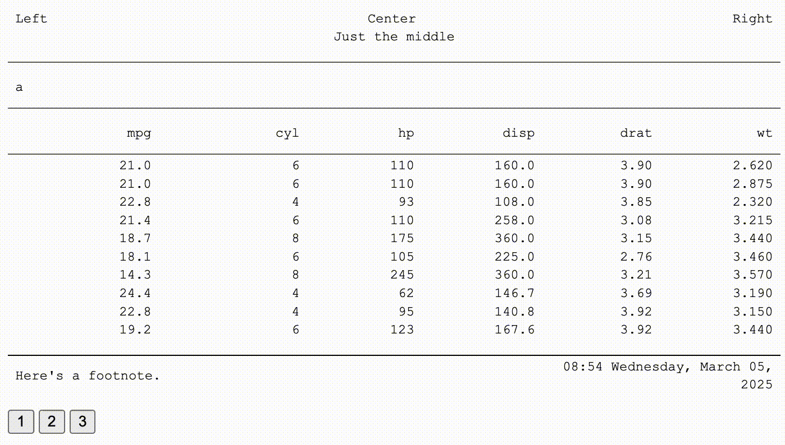

{clinify} is direct extension of the {flextable} and {officer} packages, aimed at supplementing some functionality and simplifying some common tasks in the creation of clinical tables, listings and figures.
Installation
You can install the development version of {clinify} like so:
install.packages("clinify")
# Install the development version:
devtools::install_github("https://github.com/atorus-research/clinify.git", ref="development")Motivation
There’s a large assortment of table packages available, and there are many that are specifically catered to clinical reporting. For many organizations, one of these packages may very well be a great choice, but there are a couple of key motivators we’ve found that lead drove us to start writing {clinify}:
- Clinical output standards likely exist within an organization, and changing those standards may not be an option
- It’s very likely that certain outputs will require that you deviate from those standards, so flexibility it necessary, sometimes in highly nuanced ways
- Organizations like Contract Research Organizations (CROs) may have to adapt to multiple clients’ reporting standards, which likely don’t look the same
- Regardless of the situation, reuse and repeatability of a given configuration is critical, and changes in configuration must be easily implemented.
Instead of building a new package from the ground up, {clinify} aims to extend what we see as a best choice for the situation at hand, adding new functionality where necessary and streamlining common tasks to make them more efficient for programmers to implement. We chose {flextable} for a two key reasons:
- {flextable} already offers most of the functionality that we’re looking for, particularly with the pairing of {officer}. For example, word documents have to be a first class priority of output support.
- While creating a table is the focus, the output tends to be more than just a table. We need the capability to modify the underlying document as a whole, which is another place that {officer} is truly necessary.
Design Philosophy
Here are some key principles we’re using in building {clinify}:
- {clinify} objects should inherit from an underlying {flextable} or {officer} object
- {clinify} functionality must not interfere with {flextable} or {officer} functionality, i.e. {flextable} or {officer} functions called should operate without error.
Example
Here’s a basic example of some of clinify’s benefit in action
library(clinify)
# Mock some data
dat <- mtcars
dat['page'] <- c(
rep(1, 10),
rep(2, 10),
rep(3, 10),
c(4, 4)
)
dat2 <- rbind(dat, dat)
dat2['groups'] <- c(
rep('a', 32),
rep('b', 32)
)
# Create a basic table
ct <- clintable(dat2) |>
# Break pages by the "page" variable
clin_page_by('page') |>
# Add header lines using the "groups" variable
clin_group_by('groups') |>
# For overflowing columns, alternate pages with
# fixed variables for each page
clin_alt_pages(
key_cols = c('mpg', 'cyl', 'hp'),
col_groups = list(
c('disp', 'drat', 'wt'),
c('qsec', 'vs', 'am'),
c('gear', 'carb')
)
) |>
# Apply column widths as a proportion of the total page
# For alternating pages, the proportion allocated to key columns
# is carried to each page group
clin_col_widths(mpg = .2, cyl=.2, disp=.15, vs=.15) |>
# Add titles here is using new_header_footer to allow flextable functions
# to customize the titles block
clin_add_titles(
list(
c("Left", "Center", "Right"),
c("Just the middle")
)
) |>
clin_add_footnotes(
list(
c(
"Here's a footnote.",
format(Sys.time(), "%H:%M %A, %B %d, %Y")
)
)
)
# Print pages (by default 3 pages) to the viewer of the IDE
print(ct)
Built of {flextable} and {officer}, you can then write the table out to a docx file.
# Write the table out to docx
write_clintable(ct, "demo_table.docx")